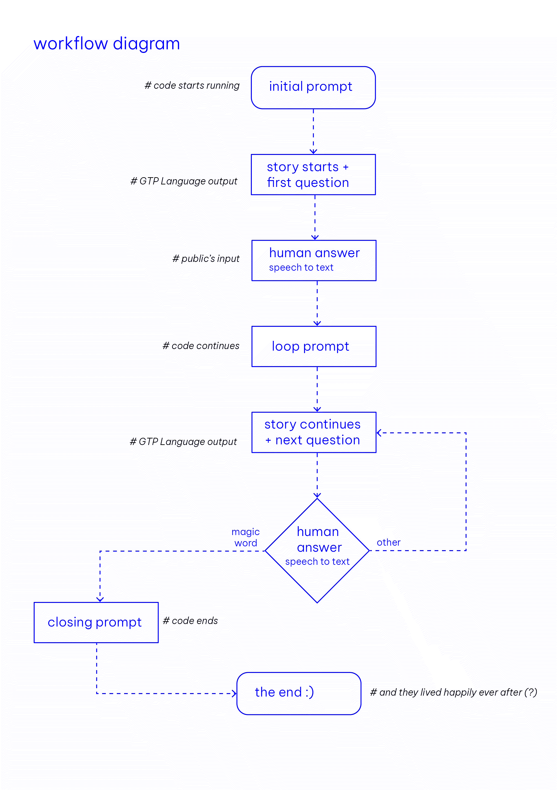

¶
🗓 Week / - 2023
third micro-challenge week¶
with Pietro, Mikel, Santi, Victor, Xavier and Adai
coming into this week, we (myrto and me) already had very clear how to use the resources that the FabLab team could offer us and for what we needed them. we worked on our concept since quit some time and it will be part of our final project. We are collaborating with Akasha Hub where we will be able to invite our audience (especially you peeps - PLEASE COME) no the 19th of June 2023.
Our concept is based on a few questions:
- How does the use of AI tools influence creative processes?
- What happens if we revert the roles between the users and the servers when collaborating with AIs?
- How can I become the assistant of an AI; who is the master of whom?
this project aims to materialise and embody the ways in which artificial intelligences (AI) affect the creation of stories and how human inputs together with nonhuman processing (AI) give us a more-than-human outcome.
We have in mind to create an interactive installation where humans and artificial intelligences collaborate in unprecedented ways to co-create a story. The name for this more thAn I
check it out here (these pages only work when we actively run the code):
the story page
and the questions page
hands-on: What we did (and did not do(ourselves)) in technical terms¶
I build a personal website on GitHub and coded everything with the help of ChatGPT. From this experience, I know how to navigate between html, CSS and create included (java)scripts, or manage its content in separate files. I trust(ed) ChatGPT to help me coding a lot. In this week though ChatGPT was more an obstacle and I figured that roaming (online) forums and google for people that experience similar issues cannot be triumphed by the Chat (yet). Sooo..
knowing relatively nothing about coding and how to build digital interfaces was an interesting starting point for our project “more thAn I” that includes a complex structure of code and (strange) languages. With a lot of help we made our scaffold and now can work on a understandable set up without relying on the many knowledgeable minds that guided us till this point. Great thanks to Jana, Tatiana who conceptually guided us; And to the our programmers Pietro, Mikel, Xavier, Victor, and Aurel (@FabLab, we know you know BUT woman power is definitely needed here!)
we want to enable a human and an AI (our vision a visual and text generating AI) to collaborate on writing a fictional story. We use a “LangChain” framework for developing applications that deal with language models, we use a “GPT” language model by “OpenAI” with the “davinci” configuration, we use the open-source web framework “Flask” that is written in “python” to make our application a responsive webpage and we use “SpeechRecognition” which is a pre-built interface of “javascript” to transform audio (speech) to text. In our coding environment we use python, javascript, HTML and CSS. We work with open-source software and have our codes in a repo for everyone to access.
my own word lexica of things I came across¶
Interface: term used in programming; describes a set of rules that define how different software components (will) interact with each other. It is the “cover” / the interface allows the user to interact with software, without exposing the internal workings of the underlying code.
API: Application Programming Interface, so this speaks specifically about how applicatioins communicate with each other. API are offered by platform like facebook, services like paypal, or providers like googlemaps to allow cross-linkages and integration in bigger (software) systems.
Visual generating AI: uses algorithms and models trained on large datasets to create new visual content based on the patterns and information it has learned.
text generating AI: uses natural language processing techniques, deep learning models, and language models (@LLMs) trained on large datasets to generate coherent (and relevant) written content-
LLMs: large language models that are made to understand and generate human-like text. They are trained on large datasets to learn human languages.
python: programming language often used in web development and data analysis. It comes with a big set of pre-built modules and functions for a lot of tasks and has an easy system to import external libraries and frameworks for specific domains.
HTML: Hypertext Markup Language, a standard markup language used to create web pages [markup: practice of adding special annotations and tags to text to provide structure and formatting instructions]. It often creates a set of instructions that tells web browsers how to display content.
markdown: another language to apply markup to text. Simpler and more intuitive way to format text.
CSS: Cascading Style Sheet, a style sheet language the describes the presentation and visual formatting of HTML and other text-structured documents.
javascript: a programming language that runs directly in a web browser (one of the few). It allows to add interactive and dynamic elements and behaviour to websites, e.g. it enables websites to respond to user actions, manipulate content, and interact with external resources. Similarly to python, it comes with a big set of pre-built modules and functions for a lot of tasks and has an easy system to import external libraries and frameworks for specific domains.
Running code in a local (on my computer) environment vs. in an online environment: local allows full control over development setup and I have offline access but need to install all libraries and necessary languages on my disk. Online is convenient when working together and I can store the necessary additional datasets online.
GPT: Generative Pre-trained Transformer. A type of language model developed by OpenAI that has exists in different versions (GPT-2, GPT-3, GPT-4 ect.).
Davinci: a name that OpenAI has given to SPECIFIC configurations of their language models (a very capable and large variation) e.g. GPT-3 and GPT-4 are having these configurations.
the code and more details¶
check out our collaborative GitHub for detailed process documentation and codes. (sorry santi, imagery is rare… we are working on remembering to take photos but in Germany we always say “wer lesen kann is klar im Vorteil)
To give a hint whether his is of importance to you, we installed:
OpenAI (python library): needed to access the OpenAI APIs (interfaces). When having an account to use ChatGPT for example, I can ask for my API key which I need to integrate OpenAI services into my system. In OpenAI I have “tokens” (because it is not open-source anymore) that I need to use the API. If my tokes are used up I can only buy new ones.
Flask (library): open-source web framework that is written in python. It is like a foundation / structure that helps to make a python code a web application. You can create routes that define how applications are responding to different URLs. It is a way to make a website out of your code.
LangChain (library): is a python library that provides open-source frameworks to develop applications that deal with (large) language models. Its idea is to “chain” together different components to create more advanced use cases around LLMs like chatbots and generative question-answering.
SpeechRecognition (library): is a javascript library that serves as a Web Speesch API (interface). It enable to record, detect, and transcribe audio (speech) into written text.
and here is our system diagramm:

References:¶
• replit; allows programming code in collaboration in an online environment
• LangChain by python; a open-source framework to develop applications that deal with language models
• SpeechRecognition by javascript; a open-source Web Speech API
• Flask by python; a open-source web framework we use to stream and show the (inter)actions
• the best to look everything up related to the digital interface languages
• OpenAI overview of their models